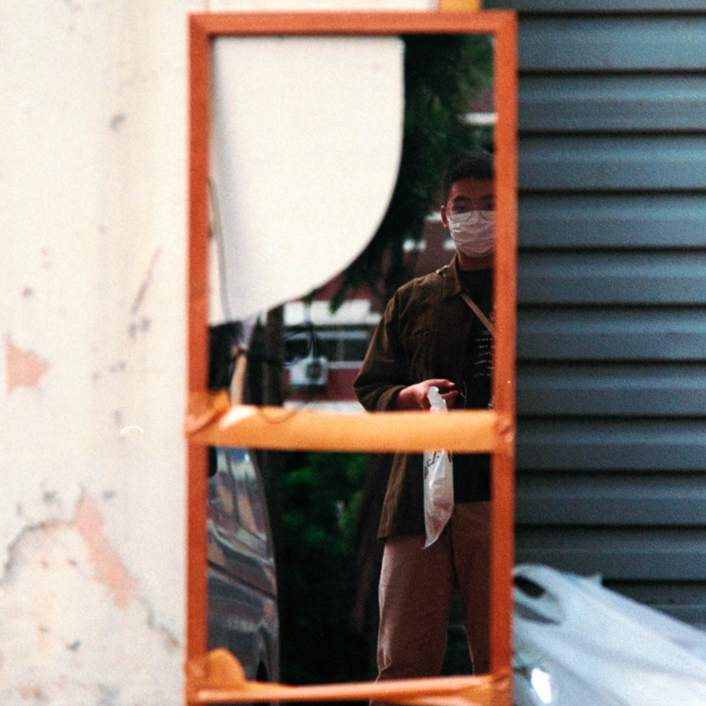

Since my youth, I always had an interest about expressionism through the use of visual arts. Later in my highschool years, I decided to pursue art academically which helped me broaden my understanding and knowledge of artists and their intentions.
Some photographers that have and continue to influence me are Saul Leiter, William Eggleston and Fan Ho. From this, my photography often explores capturing the everyday while also creating a sense of nostalgia in my photographs.
Currently, I am working on creating a large enough portfolio of photos in order to create specific themes and hopefully be able to distribute my work.
Instagram: @bryan.hue